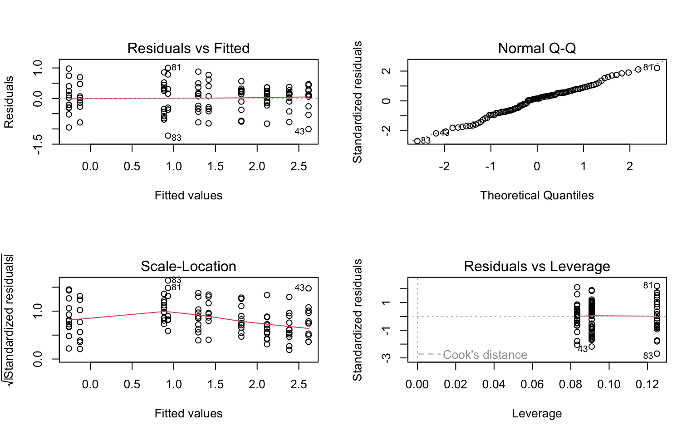

Code
#importing data set
plant_og <- read_csv(here("data", "knb-lter-hfr.109.18","hf109-01-sarracenia.csv"))
View(plant_og)The Sarracenia are one of three genera, to the carnivorous plant family Sarraceniaceae. The Sarracenia are wetland-inhabiting pitcher plants, located in eastern North America. (Ellison & Butler, 2012). The wetland environment typically has a low nutrient level, as carnivorous plants are known for tolerating low nutrient levels, because they can obtain added nutrients from their prey (Keddy, 2008). Though many people can obtain sarracenia from their local hardware stores, Sarracenia is studied for many reasons. The Sarracenia purpurea exhibits many ethnobotanical uses, including the treatments of type 2 diabetes and tuberculosis-like symptoms. (Huang & Chen, 2022). The leaf extract from S. purpura exhibits several ethnobotanical uses; further tests are being conducted on the roots and stems. This study will evaluate the morphological, physiological and taxonomic characteristics of Sarracenia on the plant’s biomass. Using the data set from “Effects of Prey Availability on Sarracenia Physiology at Harvard Forest 2005” and given the morphological, physiological and taxonomic characteristics we hope to predict the biomass of sarracenia, by species.
The data set was sourced from the Harvard Forest in 2005 on Sarracenia to examine the effects of prey availability on photosynthetic rate (Amass), chlorophyll fluorescence, growth, architecture, and foliar nutrient and chlorophyll content of ten pitcher plant (Sarracenia) species (Ellison & Farnsworth). We filtered the original data set to select the following columns: totmass, species, feedlevel, sla, chlorophyll, amss, num_lvs, num_phylls.
By selecting these columns we are trying to determine how species and physiological characteristics predict biomass.
In order to find any missing data in the data set, we used the function gg_miss_var to filter and display the missing data. Figure 1 demonstrates that the columns of chlorophyll, amass , sla, num_phylls and num_lvs are missing data. The columns totmass, species and feedlevel had no missing data. To determine the relationships between numerical variables in our data set, we calculated Pearson’s r and visually represented correlation using a correlation plot. Figure 2 indicates correlation between variables with the color indicating a positive correlation and the color red indicating a negative correlation. The highest positive correlation was between “sla” and “amass”, which was 0.32. The highest negative correlation was between “num_lvs” and “amass”. Both correlations are not significant as a strong correlation is considered to be between 0.60 - 1.To visualize if there are any relationships between variables Figure 3 demonstrates a paris plot. A paris plot displays bar graphs, scatterplots, density plots and Pearson’s correlation.
To determine how species and physiological characteristics predict biomass, we will use multiple linear models. The null model does not contain any predictor variables and only contains the independent variable (totmass). The null model will state that when given the predictor variables, the independent variable can not be determined. The full model contains all predictor variables and includes the independent variable. The full model (alternative) will state that when given the predictor variables, the independent variable can be predicted.
Figure 4 demonstrates a visual assessment of normality and homoscedasticity of the full model, using diagnostic plots. We also tested for normality using the Shapiro-Wilk test (null hypothesis: variable of interest (i.e the residuals) are normally distributed). We tested for heteroskedasticity using the Breusch-Pagan test (null hypothesis: variable of interest has constant variance). We found that the full model observations were heteroskedasticity and had a non-normality of residuals. A common occurrence in biology statistics is to commit a log transformation. Thus, the full model underwent a log transformation for each observation. The new model, now called full_log, has observations that are normally distributed.
We evaluated multicollinearity by calculating generalized variance inflation factor and determined that all predictor variables had a VIF score lower than 5, except species. Though species variable had a score higher than 5, we are able to dismiss due to the column being categorical.
Three more linear models were created to compare with the null and full model. The initial model, referred to as “model2_log”, the predictor variable species was incorporated to account for the variation in size and environmental conditions among Sarracenia species. The second model, referred to as “model3_log”, the species predictor is still included, with an additional variable, feed level. The feed-level was included due to the presence of ground hymenoptera which has a significant impact on biomass. The third model, named “model3_log”, retains the species variable and adds chlorophyll. Chlorophyll is a compound that helps plants undergo the process of photosynthesis and could have an impact on a plant’s biomass. The AICc is a metric to figure out what linear model is the best. We tested the full_log, null_log, model2_log, model3_log and model4_log. The full_log had the lowest AICc score of 133.94 and we used the full_log as the linear model to predict biomass.
#importing data set
plant_og <- read_csv(here("data", "knb-lter-hfr.109.18","hf109-01-sarracenia.csv"))
View(plant_og)#importing data set and filtering
plant <- read_csv(here("data", "knb-lter-hfr.109.18","hf109-01-sarracenia.csv")) %>%
#make the column names cleaner
clean_names() %>%
#from tidyverse, selecting the columns of interest
select(totmass, species, feedlevel, sla, chlorophyll, amass, num_lvs, num_phylls)# looking for missing data
gg_miss_var(plant)
Figure 1 A visual of the missing data in the plant date set. The x-axis displays the data that is missing and the y-axis displays the variables. The dots represents how many missing data is within each variable.
#sub-setting the data by dropping the NAs:
plant_subset <- plant %>%
#dropping the value of zero in the columns below
drop_na(sla, chlorophyll, amass, num_lvs, num_phylls)
#View(plant_subset)#calculate Pearson's r for numerical values only
plant_cor <- plant_subset %>%
#selecting all the columns between feedlevel:num_phylls
select(feedlevel:num_phylls) %>%
cor(method = "pearson")
#View(plant_cor)
########
#creating a correlation plot
corrplot(plant_cor,
#change the shape of what's in the cells
method = "ellipse",
addCoef.col = "black"
)Figure 2 The Pearson’s correlation between the predictor variables. The blue is represented by a postive correlation and the red is represented by a negative correlation. The scale on the right has a range of 1 to -1 demonstrating the strength of the correlation.
#Creating a plot of each variable compared against the others
plant_subset %>%
select(species:num_phylls) %>%
ggpairs()Figure 3 The Paris plot demonstrates many types of plots for each predictor variable. The persons correlation is displayed with “Corr”, the density plot are the plots diagnol and below the density plot are scatter plots. Boxplots plots are displayed along the top and bar plots are displayed on the left.
# Beginning Regression
null <- lm(totmass ~ 1, data = plant_subset)
full <- lm(totmass ~ species + feedlevel + sla + chlorophyll + amass + num_lvs + num_phylls,
data = plant_subset)#full-diagnostics
par(mfrow = c(2,2))
plot(full)Figure 4 A total of four plots are used to visually determine the normality of the full model. The Residuals vs Fitted are used to determine the homoscedasticity or heteroscedasticity of the model. The Normal Q-Q plot is used to determine the normality of the residuals. The Residuals vs Leverage uses Cooks distance to determine if outliers are influencing the model. The Scale-Location plot determines the homoscedasticity of the variance.
#changed the whole process using the log.
#all on a log scale, it is easier to find the slope
null_log <- lm(log(totmass)~1, data = plant_subset) #this is the null
full_log <- lm(log(totmass) ~ species + feedlevel + sla + chlorophyll + amass + num_lvs + num_phylls,
data = plant_subset)
#check_normality(full_log)
#OK: residuals appear as normally distributed (p = 0.107)
#check_heteroscedasticity(full_log)
#OK: Error variance appears to be homoscedastic (p = 0.071)#full-diagnostics
par(mfrow = c(2,2))
plot(full_log)
#check_normality(full_log)
#OK: residuals appear as normally distributed (p = 0.107)
#check_heteroscedasticity(full_log)
#OK: Error variance appears to be homoscedastic (p = 0.071)Figure 5 A total of four plots are used to visually determine the normality of the full log. The Residuals vs Fitted are used to determine the homoscedasticity or heteroscedasticity of the model. The Normal Q-Q plot is used to determine the normality of the residuals. The Residuals vs Leverage uses Cooks distance to determine if outliers are influencing the model. The Scale-Location plot determines the homoscedasticity of the variance.
#full-diagnostics
par(mfrow = c(2,2))
plot(null_log)Figure 6 A total of four plots are used to visually determine the normality of the null model. The Residuals vs Fitted are used to determine the homoscedasticity or heteroscedasticity of the model. The Normal Q-Q plot is used to determine the normality of the residuals. The Residuals vs Leverage uses Cooks distance to determine if outliers are influencing the model. The Scale-Location plot determines the homoscedasticity of the variance.
#looking for something more than 5,
#car() looks for categorical predictors / uses categorical predictors
car::vif(full_log) GVIF Df GVIF^(1/(2*Df))
species 42.351675 9 1.231351
feedlevel 1.621993 1 1.273575
sla 1.999989 1 1.414210
chlorophyll 1.949828 1 1.396362
amass 2.872084 1 1.694722
num_lvs 2.813855 1 1.677455
num_phylls 2.995510 1 1.730754#full-diagnostics
model2_log <- lm(log(totmass) ~species, data = plant_subset)
par(mfrow = c(2,2))
plot(model2_log)
#check_normality(model2_log) #OK: residuals appear as normally distributed (p = 0.374).
#check_heteroscedasticity(model2_log) #OK: Error variance appears to be homoscedastic (p = 0.100).Figure 7 A total of four plots are used to visually determine the normality of the model4_log. The Residuals vs Fitted are used to determine the homoscedasticity or heteroscedasticity of the model. The Normal Q-Q plot is used to determine the normality of the residuals. The Residuals vs Leverage uses Cooks distance to determine if outliers are influencing the model. The Scale-Location plot determines the homoscedasticity of the variance.
#full-diagnostics
model3_log <- lm(log(totmass) ~species + feedlevel, data = plant_subset)
par(mfrow = c(2,2))
plot(model3_log)#check_normality(model3_log)
#check_heteroscedasticity(model3_log)Figure 1 A total of four plots are used to visually determine the normality of the model3_log. The Residuals vs Fitted are used to determine the homoscedasticity or heteroscedasticity of the model. The Normal Q-Q plot is used to determine the normality of the residuals. The Residuals vs Leverage uses Cooks distance to determine if outliers are influencing the model. The Scale-Location plot determines the homoscedasticity of the variance.
#full-diagnostics
model4_log <- lm(log(totmass) ~species + chlorophyll, data = plant_subset)
par(mfrow = c(2,2))
plot(model4_log)#check_normality(model4_log)#Warning: Non-normality of residuals detected (p = 0.002).
#check_heteroscedasticity(model4_log)#OK: Error variance appears to be homoscedastic (p = 0.546).Figure 8 A total of four plots are used to visually determine the normality of the model4_log. The Residuals vs Fitted are used to determine the homoscedasticity or heteroscedasticity of the model. The Normal Q-Q plot is used to determine the normality of the residuals. The Residuals vs Leverage uses Cooks distance to determine if outliers are influencing the model. The Scale-Location plot determines the homoscedasticity of the variance.
MuMIn::AICc(full_log, model2_log, null_log, model3_log, model4_log) df AICc
full_log 17 133.9424
model2_log 11 157.5751
null_log 2 306.0028
model3_log 12 159.6218
model4_log 12 146.0276The full_log mode result generated a P-value less than 0.01, multiple R-squared of 0.89687, adjusted R-squared of 0.84, F-statistics of 38.38 and a degrees of freedom of 87. We then could reject the null hypothesis and accept the alternative hypothesis, being that we can predict a plant’s biomass given the predictor variables. The variables of feedlevel, chlorophyll, amass, sla and num_lvs all had p-values lower than 0.05, providing these predictor variables are significant in predicting the total biomass of Sarracenia. Regarding the species column, s. lata,s. lava, s. leucophylla, s. minor, a. psittacina, s. rose and s.ubra all had a p-values lower than 0.05, providing that these species are significant in predicting the total biomass. This means that when given the chlorophyll amount, mass-based saturated photosynthetic rate, total number of phyllodes, leaf area and grams of hymenoptera we can predict the biomass of a sarracenia. Phyllodes and chlorophyll are present in photosynthesis, which is primarily located in the leaf area of a plant. Energy of transportation and process of photosynthesis is strongly impacted by the nutrients absorbed and carnivores plants primary source of nutrients are from insects. These factors represent the entire plant and can now be implemented to find the biomass of the sarracenia.
# Creating a table
summary(full_log)
Call:
lm(formula = log(totmass) ~ species + feedlevel + sla + chlorophyll +
amass + num_lvs + num_phylls, data = plant_subset)
Residuals:
Min 1Q Median 3Q Max
-0.88872 -0.20811 0.02825 0.24218 0.78287
Coefficients:
Estimate Std. Error t value Pr(>|t|)
(Intercept) -1.339043 0.597727 -2.240 0.027624 *
speciesalata 1.113163 0.184021 6.049 3.56e-08 ***
speciesflava 1.404562 0.262955 5.341 7.29e-07 ***
speciesjonesii 0.319652 0.196426 1.627 0.107281
speciesleucophylla 1.709035 0.227608 7.509 4.88e-11 ***
speciesminor 0.389310 0.187903 2.072 0.041239 *
speciespsittacina -1.645198 0.207035 -7.946 6.36e-12 ***
speciespurpurea -0.364348 0.254380 -1.432 0.155643
speciesrosea -0.947383 0.260495 -3.637 0.000467 ***
speciesrubra 0.875342 0.196361 4.458 2.46e-05 ***
feedlevel -0.474255 0.234493 -2.022 0.046199 *
sla -0.002493 0.001160 -2.149 0.034430 *
chlorophyll 0.004368 0.001189 3.672 0.000414 ***
amass 0.002338 0.002988 0.782 0.436166
num_lvs 0.091764 0.022413 4.094 9.46e-05 ***
num_phylls -0.039585 0.051714 -0.765 0.446068
---
Signif. codes: 0 '***' 0.001 '**' 0.01 '*' 0.05 '.' 0.1 ' ' 1
Residual standard error: 0.413 on 87 degrees of freedom
Multiple R-squared: 0.8687, Adjusted R-squared: 0.8461
F-statistic: 38.38 on 15 and 87 DF, p-value: < 2.2e-16table <- tidy(full_log, conf.int = TRUE) %>%
#change the p-value number if they're really small
#change the estimates, standard error, and t-tstastics to round to ___ digits
#using mutate
#make it into a flextable
flextable() %>%
autofit()model_pred <- ggpredict(full_log, terms = "species", back.transform = TRUE)
plot(ggpredict(full_log, terms = "species",
back.transform = TRUE),add.data = TRUE)#same way but getting error Figure 9 The plot displays the species as a predictor of the total biomass. The dots are represented by biomass values of each species. The vertical lines represent the error bars.
#model that predicts the given variables
model_pred# Predicted values of totmass
species | Predicted | 95% CI
---------------------------------------
alabamensis | 2.78 | [2.11, 3.65]
alata | 8.45 | [6.58, 10.86]
flava | 11.31 | [7.57, 16.89]
jonesii | 3.82 | [2.78, 5.26]
minor | 4.10 | [3.15, 5.33]
psittacina | 0.54 | [0.37, 0.77]
purpurea | 1.93 | [1.28, 2.91]
rubra | 6.66 | [5.03, 8.82]
Adjusted for:
* feedlevel = 0.18
* sla = 129.27
* chlorophyll = 471.29
* amass = 35.26
* num_lvs = 7.08
* num_phylls = 0.58Ellison, Aaron M., et al. “Phylogeny and Biogeography of the Carnivorous Plant Family Sarraceniaceae.” PLoS ONE, vol. 7, no. 6, 2012, https://doi.org/10.1371/journal.pone.0039291.
Huang, Yen-Hua, et al. “Anticancer and Antioxidant Activities of the Root Extract of the Carnivorous Pitcher Plant Sarracenia Purpurea.” Plants, vol. 11, no. 13, 2022, p. 1668, https://doi.org/10.3390/plants11131668.
Keddy, P. “Freshwater Marshes.” Encyclopedia of Ecology, 2008, pp. 1690–1697, https://doi.org/10.1016/b978-008045405-4.00338-4.
Ellison, A. and E. Farnsworth. 2021. Effects of Prey Availability on Sarracenia Physiology at Harvard Forest 2005 ver 18. Environmental Data Initiative. https://doi.org/10.6073/pasta/26b22d09279e62fd729ffc35f9ef0174 (Accessed 2023-06-10).